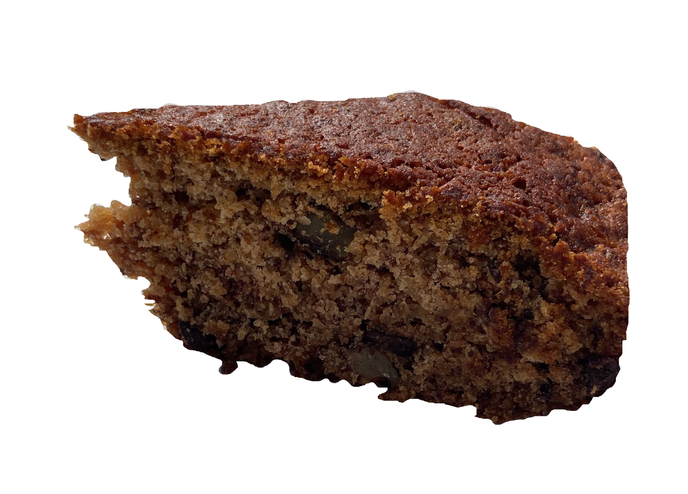

Marika's Gluten Free Banana Bread
Rating:
13/10 (according to Marika)
Actual Rating:
9/10
In just one week, the Monoma kitchen oven has been working day and night to keep up with Marika's banana bread cravings! As I type this, banana bread batch number six is already being debated... I've got to say, for something gluten-free, it's shockingly delicious! Just cheeky enough yet not too sweet, the kind of treat that makes it impossible to stop at just one slice.
Ingredients:
- 4 overripe bananas
- 1/3 cups melted butter
- 3/4 cups sugar
- 1 egg
- 1 tsp vanilla extract
- 1 1/2 cups gluten-free flour
- 3/4 tsp baking soda
- 3/4 tsp baking powder
- 1/2 tsp salt
- wallnuts and chocolate
Mash the bananas, and add all the wet ingredients and sugar to the same bowl. In a seperate bowl, mix the dry ingredients before incorporating them to the wet ingredients. Cut the wallnuts and chocolate into small chunks before adding them to the batter. Butter the loaf pan, pour the batter into it, and bake for 50 minutes at 180C. Let it cool for at least 15 minutes before serving.